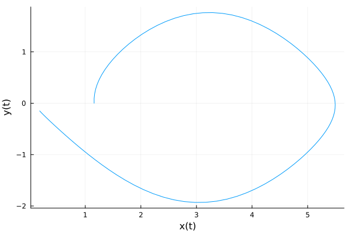

Tutorial
In this tutorial, we try to give an overview of the basic usage of GeometricIntegrators and its main components.
Installation
GeometricIntegrators.jl can be installed using Julia's built-in package manager in the command line interface by
julia> ]
(v1.8) pkg> add GeometricIntegratorsIn a Jupyter notebook, GeometricIntegrators.jl can be installed by explicitly using the Pkg module as
using Pkg
Pkg.add("GeometricIntegrators")This will install the library itself as well as all dependencies.
Basic usage
In the simplest cases, the use of GeometricIntegrators.jl requires the construction of two objects, an equation and an integrator. For many standard methods, the integrator is implicitly selected by specifying an equation and a tableau.
Before any use, we need to load GeometricIntegrators,
using GeometricIntegratorsThen we can create an ODE object for the equation $\dot{x} (t) = x(t)$ with initial condition $x(0) = 1$, integration time span $(0, 1)$ and a time step of $\Delta t = 0.1$,
prob = ODEProblem((ẋ, t, x, params) -> ẋ[1] = x[1], (0.0, 1.0), 0.1, [1.0])ODEProblem{Float64, Float64, Vector{Float64}, ODE{Main.var"#1#2", NullInvariants, NullParameters, NullPeriodicity}, NamedTuple{(:q,), Tuple{Vector{Float64}}}, NullParameters}(ODE{Main.var"#1#2", NullInvariants, NullParameters, NullPeriodicity}(Main.var"#1#2"(), NullInvariants(), NullParameters(), NullPeriodicity()), (0.0, 1.0), 0.1, (q = [1.0],), NullParameters())create an integrator for this ODE, using the tableau for the explicit Euler method
int = Integrator(prob, TableauExplicitEuler())IntegratorERK{Float64, Float64, 1, 1, NamedTuple{(:v,), Tuple{GeometricEquations.var"#10#11"{ODE{Main.var"#1#2", NullInvariants, NullParameters, NullPeriodicity}, NullParameters}}}}(GeometricIntegrators.Integrators.ParametersERK{Float64, Float64, 1, 1, NamedTuple{(:v,), Tuple{GeometricEquations.var"#10#11"{ODE{Main.var"#1#2", NullInvariants, NullParameters, NullPeriodicity}, NullParameters}}}}((v = GeometricEquations.var"#10#11"{ODE{Main.var"#1#2", NullInvariants, NullParameters, NullPeriodicity}, NullParameters}(ODE{Main.var"#1#2", NullInvariants, NullParameters, NullPeriodicity}(Main.var"#1#2"(), NullInvariants(), NullParameters(), NullPeriodicity()), NullParameters()),),
Runge-Kutta Tableau explicit_euler with 1 stages and order 1:
0.0 │ 0.0
─────┼─────
│ 1.0
, 0.1), GeometricIntegrators.Integrators.CacheDict{GeometricIntegrators.Integrators.ParametersERK{Float64, Float64, 1, 1, NamedTuple{(:v,), Tuple{GeometricEquations.var"#10#11"{ODE{Main.var"#1#2", NullInvariants, NullParameters, NullPeriodicity}, NullParameters}}}}}(GeometricIntegrators.Integrators.ParametersERK{Float64, Float64, 1, 1, NamedTuple{(:v,), Tuple{GeometricEquations.var"#10#11"{ODE{Main.var"#1#2", NullInvariants, NullParameters, NullPeriodicity}, NullParameters}}}}((v = GeometricEquations.var"#10#11"{ODE{Main.var"#1#2", NullInvariants, NullParameters, NullPeriodicity}, NullParameters}(ODE{Main.var"#1#2", NullInvariants, NullParameters, NullPeriodicity}(Main.var"#1#2"(), NullInvariants(), NullParameters(), NullPeriodicity()), NullParameters()),),
Runge-Kutta Tableau explicit_euler with 1 stages and order 1:
0.0 │ 0.0
─────┼─────
│ 1.0
, 0.1), Dict{UInt64, IntegratorCache}()))and compute the solution,
sol = integrate(prob, int)GeometricSolution{Float64, Float64, NamedTuple{(:q,), Tuple{DataSeries{Float64, Vector{Float64}}}}, ODEProblem{Float64, Float64, Vector{Float64}, ODE{Main.var"#1#2", NullInvariants, NullParameters, NullPeriodicity}, NamedTuple{(:q,), Tuple{Vector{Float64}}}, NullParameters}, NamedTuple{(:q,), Tuple{NullPeriodicity}}}([0.0, 0.1, 0.2, 0.3, 0.4, 0.5, 0.6, 0.7, 0.8, 0.9, 1.0], (q = DataSeries{Float64, Vector{Float64}} with data type Float64 and array type Vector{Float64}
[[1.0], [1.1], [1.2100000000000002], [1.3310000000000002], [1.4641000000000002], [1.61051], [1.7715610000000002], [1.9487171], [2.1435888100000002], [2.357947691], [2.5937424601]],), ODEProblem{Float64, Float64, Vector{Float64}, ODE{Main.var"#1#2", NullInvariants, NullParameters, NullPeriodicity}, NamedTuple{(:q,), Tuple{Vector{Float64}}}, NullParameters}(ODE{Main.var"#1#2", NullInvariants, NullParameters, NullPeriodicity}(Main.var"#1#2"(), NullInvariants(), NullParameters(), NullPeriodicity()), (0.0, 1.0), 0.1, (q = [1.0],), NullParameters()), (q = NullPeriodicity(),), 1, 10, 0)Plot and compare with the exact solution
using Plots
plot(xlims=[0,1], xlab="t", ylab="x(t)", legend=:bottomright)
plot!(sol.t, sol.q[:,1], label="numeric")
plot!(sol.t, exp.(sol.t), label="exact")"/home/runner/work/GeometricIntegrators.jl/GeometricIntegrators.jl/docs/build/images/tutorial-ode-1.png"
Equations
In GeometricIntegrators.jl we distinguish between three basic types of equations:
- ordinary differential equations (ODEs),
- differential algebraic equations (DAEs),
- stochastic differential equations (SDEs).
For each type, there are several subtypes
- standard equations (
ODEProblem,DAEProblem,SDEProblem), - implicit equations (
IODEProblem,IDAEProblem), - partitioned equations (
PODEProblem,PDAEProblem,PSDEProblem), - Hamiltonian equations (
HODEProblem,HDAEProblem), - Lagrangian equations (
LODEProblem,LDAEProblem), - split equations (
SODEProblem,SPDAEProblem,SPSDEProblem).
Ordinary differential equations
Consider an ODE of the form
\[\dot{x} (t) = v(t, x(t)) ,\]
where $\dot{x}$ denotes the derivative of $x$ and $f$ the vector field of the equation, which is assumed to depend on both $t$ and $x$. In the following, we will solve the mathematical pendulum, whose equations are given by
\[\begin{pmatrix} \dot{x}_1 \\ \dot{x}_2 \\ \end{pmatrix} = \begin{pmatrix} x_2 \\ \sin (x_1) \\ \end{pmatrix} .\]
Together with the integration time span (t₀,t₁) and the time step, an ODE defines an ODEProblem.
The user needs to specify a function ẋ that computes the vector field and must have the interface
function ẋ(v, t, x, params)
v[1] = ...
v[2] = ...
...
endwhere t is the current time, q is the current solution vector, v is the vector which holds the result of evaluating the vector field $v$ on t and q, and params is a NamedTuple of constant parameters on which the vector field may depend.
For the mathematical pendulum, this could look as follows:
function ẋ(v, t, x, params)
v[1] = x[2]
v[2] = sin(x[1])
endẋ (generic function with 1 method)An ODEProblem is instantiated by
ODEProblem(<vector field>, <time span>, <time step>, <initial conditions>; kwargs...)so to create and ODEProblem, one only needs to pass the above function ẋ, a tuple tspan containing the start and end times of the integration, the time step tstep as well as an initial condition:
tspan = (0.0, 10.0)
tstep = 0.1
x₀ = [acos(0.4), 0.0]
ode = ODEProblem(ẋ, tspan, tstep, x₀)ODEProblem{Float64, Float64, Vector{Float64}, ODE{typeof(Main.ẋ), NullInvariants, NullParameters, NullPeriodicity}, NamedTuple{(:q,), Tuple{Vector{Float64}}}, NullParameters}(ODE{typeof(Main.ẋ), NullInvariants, NullParameters, NullPeriodicity}(Main.ẋ, NullInvariants(), NullParameters(), NullPeriodicity()), (0.0, 10.0), 0.1, (q = [1.1592794807274085, 0.0],), NullParameters())The full constructor would look like
ode = ODEProblem(ẋ, tspan, tstep, x₀; invariants = NullInvariants(),
parameters = NullParameters(), periodicity = NullPeriodicity())ODEProblem{Float64, Float64, Vector{Float64}, ODE{typeof(Main.ẋ), NullInvariants, NullParameters, NullPeriodicity}, NamedTuple{(:q,), Tuple{Vector{Float64}}}, NullParameters}(ODE{typeof(Main.ẋ), NullInvariants, NullParameters, NullPeriodicity}(Main.ẋ, NullInvariants(), NullParameters(), NullPeriodicity()), (0.0, 10.0), 0.1, (q = [1.1592794807274085, 0.0],), NullParameters())where all keyword arguments, namely invariants, parameters and periodicity, are by default initialized to be absent.
Partitioned ordinary differential equations
The pendulum problem is a Hamiltonian system that can also be expressed as
\[\dot{q} = \frac{\partial H}{\partial p} = p , \hspace{3em} \dot{p} = - \frac{\partial H}{\partial q} = \sin (q) , \hspace{3em} H (q,p) = \frac{1}{2} p^2 + \cos (q) .\]
This structure, namely the partitioning into two sets of variables $(q,p)$ instead of $x$, can be exploited for more efficient integration. Such equations can be defined in terms of a partitioned ODE, where the vector fields are specified separately,
function q̇(v, t, q, p, params)
v[1] = p[1]
end
function ṗ(f, t, q, p, params)
f[1] = sin(q[1])
end
pode = PODEProblem(q̇, ṗ, (0.0, 25.0), 0.1, [acos(0.4)], [0.0])PODEProblem{Float64, Float64, Vector{Float64}, PODE{typeof(Main.q̇), typeof(Main.ṗ), NullInvariants, NullParameters, NullPeriodicity}, NamedTuple{(:q, :p), Tuple{Vector{Float64}, Vector{Float64}}}, NullParameters}(PODE{typeof(Main.q̇), typeof(Main.ṗ), NullInvariants, NullParameters, NullPeriodicity}(Main.q̇, Main.ṗ, NullInvariants(), NullParameters(), NullPeriodicity()), (0.0, 25.0), 0.1, (q = [1.1592794807274085], p = [0.0]), NullParameters())The first two arguments to the PODE constructor are the functions that determine the vector fields of the equations $\dot{q} (t) = v(t, q(t), p(t))$ and $\dot{p} (t) = f(t, q(t), p(t))$. The third and fourth argument determines the initial conditions of $q$ and $p$, respectively. The functions defining the vector field have to take four arguments, the current time t, the current solution vectors q and p and the output vector v or f.
Integrators
We support a number of standard integrators (geometric and non-geometric) like explicit, implicit and partitioned Runge-Kutta methods, splitting methods and general linear methods (planned).
In order to instantiate many of the standard integrators, one needs to specify an ODEProblem, a tableau and a timestep, e.g.,
int = Integrator(ode, TableauExplicitEuler())IntegratorERK{Float64, Float64, 2, 1, NamedTuple{(:v,), Tuple{GeometricEquations.var"#10#11"{ODE{typeof(Main.ẋ), NullInvariants, NullParameters, NullPeriodicity}, NullParameters}}}}(GeometricIntegrators.Integrators.ParametersERK{Float64, Float64, 2, 1, NamedTuple{(:v,), Tuple{GeometricEquations.var"#10#11"{ODE{typeof(Main.ẋ), NullInvariants, NullParameters, NullPeriodicity}, NullParameters}}}}((v = GeometricEquations.var"#10#11"{ODE{typeof(Main.ẋ), NullInvariants, NullParameters, NullPeriodicity}, NullParameters}(ODE{typeof(Main.ẋ), NullInvariants, NullParameters, NullPeriodicity}(Main.ẋ, NullInvariants(), NullParameters(), NullPeriodicity()), NullParameters()),),
Runge-Kutta Tableau explicit_euler with 1 stages and order 1:
0.0 │ 0.0
─────┼─────
│ 1.0
, 0.1), GeometricIntegrators.Integrators.CacheDict{GeometricIntegrators.Integrators.ParametersERK{Float64, Float64, 2, 1, NamedTuple{(:v,), Tuple{GeometricEquations.var"#10#11"{ODE{typeof(Main.ẋ), NullInvariants, NullParameters, NullPeriodicity}, NullParameters}}}}}(GeometricIntegrators.Integrators.ParametersERK{Float64, Float64, 2, 1, NamedTuple{(:v,), Tuple{GeometricEquations.var"#10#11"{ODE{typeof(Main.ẋ), NullInvariants, NullParameters, NullPeriodicity}, NullParameters}}}}((v = GeometricEquations.var"#10#11"{ODE{typeof(Main.ẋ), NullInvariants, NullParameters, NullPeriodicity}, NullParameters}(ODE{typeof(Main.ẋ), NullInvariants, NullParameters, NullPeriodicity}(Main.ẋ, NullInvariants(), NullParameters(), NullPeriodicity()), NullParameters()),),
Runge-Kutta Tableau explicit_euler with 1 stages and order 1:
0.0 │ 0.0
─────┼─────
│ 1.0
, 0.1), Dict{UInt64, IntegratorCache}()))In order to run the integrator, the integrate() functions is called, passing an integrator object and the number of time steps to integrate:
sol = integrate(ode, int)GeometricSolution{Float64, Float64, NamedTuple{(:q,), Tuple{DataSeries{Float64, Vector{Float64}}}}, ODEProblem{Float64, Float64, Vector{Float64}, ODE{typeof(Main.ẋ), NullInvariants, NullParameters, NullPeriodicity}, NamedTuple{(:q,), Tuple{Vector{Float64}}}, NullParameters}, NamedTuple{(:q,), Tuple{NullPeriodicity}}}([0.0, 0.1, 0.2, 0.3, 0.4, 0.5, 0.6, 0.7, 0.8, 0.9 … 9.1, 9.2, 9.3, 9.4, 9.5, 9.6, 9.7, 9.8, 9.9, 10.0], (q = DataSeries{Float64, Vector{Float64}} with data type Float64 and array type Vector{Float64}
[[1.1592794807274085, 0.0], [1.1592794807274085, 0.0916515138991168], [1.16844463211732, 0.1833030277982336], [1.1867749348971435, 0.27531729328384535], [1.214306664225528, 0.36803384468818096], [1.251110048694346, 0.4617466103173175], [1.2972847097260778, 0.5566800160960343], [1.3529527113356812, 0.6529628458243084], [1.418248995918112, 0.7505994225236635], [1.4933089381704783, 0.8494381427201427] … [0.43060324588079135, -0.41420434937853495], [0.38918281094293783, -0.372462443739593], [0.35193656656897854, -0.33451919746956543], [0.318484646822022, -0.30004756535686744], [0.28847989028633525, -0.26873478804782697], [0.26160641148155256, -0.2402852621015313], [0.23757788527139942, -0.2144219981539857], [0.21613568545600084, -0.19088707420851603], [0.19704697803514923, -0.1694413913726895], [0.18010283889788029, -0.14986396030881768]],), ODEProblem{Float64, Float64, Vector{Float64}, ODE{typeof(Main.ẋ), NullInvariants, NullParameters, NullPeriodicity}, NamedTuple{(:q,), Tuple{Vector{Float64}}}, NullParameters}(ODE{typeof(Main.ẋ), NullInvariants, NullParameters, NullPeriodicity}(Main.ẋ, NullInvariants(), NullParameters(), NullPeriodicity()), (0.0, 10.0), 0.1, (q = [1.1592794807274085, 0.0],), NullParameters()), (q = NullPeriodicity(),), 1, 100, 0)The integrate function automatically creates an appropriate solution object, that contains the result of the integration.
plot(sol.q[:,1], sol.q[:,2], xlab="x(t)", ylab="y(t)", legend=:none)
Observe that the explicit Euler method is not well suited for integrating this system. The solutions drifts away although it should follow closed orbits.
For a Hamiltonian system, defined as a PODE, a different tableau might be more appropriate, for example a symplectic Euler method,
int = Integrator(pode, TableauLobattoIIIAIIIB(2))
sol = integrate(pode, int)GeometricSolution{Float64, Float64, NamedTuple{(:q, :p), Tuple{DataSeries{Float64, Vector{Float64}}, DataSeries{Float64, Vector{Float64}}}}, PODEProblem{Float64, Float64, Vector{Float64}, PODE{typeof(Main.q̇), typeof(Main.ṗ), NullInvariants, NullParameters, NullPeriodicity}, NamedTuple{(:q, :p), Tuple{Vector{Float64}, Vector{Float64}}}, NullParameters}, NamedTuple{(:q, :p), Tuple{NullPeriodicity, NullPeriodicity}}}([0.0, 0.1, 0.2, 0.3, 0.4, 0.5, 0.6, 0.7, 0.8, 0.9 … 24.1, 24.2, 24.3, 24.4, 24.5, 24.6, 24.7, 24.8, 24.9, 25.0], (q = DataSeries{Float64, Vector{Float64}} with data type Float64 and array type Vector{Float64}
[[1.1592794807274085], [1.1638620564223643], [1.1776280175119342], [1.2006309772533845], [1.232956612393988], [1.2747169764595088], [1.3260422182739438], [1.3870694294701484], [1.4579283370345946], [1.5387236162742652] … [1.4573386548543024], [1.3865567080330332], [1.3256055195712921], [1.2743552413676906], [1.2326687848440545], [1.2004161028510008], [1.1774853186916494], [1.1637909863868372], [1.159279758161221], [1.1639336824352515]], p = DataSeries{Float64, Vector{Float64}} with data type Float64 and array type Vector{Float64}
[[0.0], [0.09174268392263003], [0.1838446041551023], [0.2766429744102676], [0.3704299960306214], [0.46542802939977923], [0.5617622650531963], [0.6594305938032539], [0.7582709340205847], [0.857927078132083] … [-0.75749799720018], [-0.6586656764150507], [-0.561007333326713], [-0.46468367363618857], [-0.36969569258344837], [-0.27591733076202446], [-0.18312558232081716], [-0.0910278026521415], [0.0007134802420715181], [0.0924575870593976]]), PODEProblem{Float64, Float64, Vector{Float64}, PODE{typeof(Main.q̇), typeof(Main.ṗ), NullInvariants, NullParameters, NullPeriodicity}, NamedTuple{(:q, :p), Tuple{Vector{Float64}, Vector{Float64}}}, NullParameters}(PODE{typeof(Main.q̇), typeof(Main.ṗ), NullInvariants, NullParameters, NullPeriodicity}(Main.q̇, Main.ṗ, NullInvariants(), NullParameters(), NullPeriodicity()), (0.0, 25.0), 0.1, (q = [1.1592794807274085], p = [0.0]), NullParameters()), (q = NullPeriodicity(), p = NullPeriodicity()), 1, 250, 0)This creates a different integrator, which exploits the partitioned structure of the system. The solution return by the integrate step will also be a different solution, adapted to the partitioned system.
plot(sol.q[:,1], sol.p[:,1], xlab="q(t)", ylab="p(t)", legend=:none)
Moreover, this method respects the Hamiltonian structure of the system, resulting in closed orbits following the contours of the system's energy.
Tableaus
Many tableaus for Runge-Kutta methods are predefined and can easily be used like outlined above. For an overview see here.
Custom Tableaus
If required, it is straight-forward to create a custom tableau. The tableau of Heun's method, for example, is defined as follows:
a = [[0.0 0.0]
[1.0 0.0]]
b = [0.5, 0.5]
c = [0.0, 1.0]
o = 2
tab = Tableau(:heun, o, a, b, c)Runge-Kutta Tableau heun with 2 stages and order 2: \begin{array}{r|rr} 0.0 & 0.0 & 0.0 \ 1.0 & 1.0 & 0.0 \\hline & 0.5 & 0.5 \ \end{array}
Here, o is the order of the method, a are the coefficients, b the weights and c the nodes. For partitioned Runge-Kutta tableaus, PartitionedTableau can be used. The first parameter of the constructor of each tableau assigns a name to the tableau. Such custom tableaus can be used in exactly the same as standard tableaus, e.g., by
int = Integrator(ode, tab)
sol = integrate(ode, int)GeometricSolution{Float64, Float64, NamedTuple{(:q,), Tuple{DataSeries{Float64, Vector{Float64}}}}, ODEProblem{Float64, Float64, Vector{Float64}, ODE{typeof(Main.ẋ), NullInvariants, NullParameters, NullPeriodicity}, NamedTuple{(:q,), Tuple{Vector{Float64}}}, NullParameters}, NamedTuple{(:q,), Tuple{NullPeriodicity}}}([0.0, 0.1, 0.2, 0.3, 0.4, 0.5, 0.6, 0.7, 0.8, 0.9 … 9.1, 9.2, 9.3, 9.4, 9.5, 9.6, 9.7, 9.8, 9.9, 10.0], (q = DataSeries{Float64, Vector{Float64}} with data type Float64 and array type Vector{Float64}
[[1.1592794807274085, 0.0], [1.1638620564223643, 0.0916515138991168], [1.1776189005095832, 0.18366481323663172], [1.200603863694606, 0.2763784743977251], [1.2329029997879368, 0.37008634387686673], [1.2746289097818928, 0.46501283347717], [1.3259125035083894, 0.5612856856430376], [1.3868918995618045, 0.6589058883101588], [1.4576981743303377, 0.7577149699479593], [1.5384377274167502, 0.8573607029279458] … [1.4541620797452988, 0.754713612265956], [1.5345994706388935, 0.8543315553374894], [1.6250293509992746, 0.954238210516765], [1.7254458208007346, 1.053605813020732], [1.8357467300089705, 1.1513284614783446], [1.955705103604566, 1.2460154236292624], [2.0849408094100896, 1.3360062307571292], [2.222895001365226, 1.419414239796986], [2.3688104851299863, 1.49420332174862], [2.5217214667562002, 1.5582982161671592]],), ODEProblem{Float64, Float64, Vector{Float64}, ODE{typeof(Main.ẋ), NullInvariants, NullParameters, NullPeriodicity}, NamedTuple{(:q,), Tuple{Vector{Float64}}}, NullParameters}(ODE{typeof(Main.ẋ), NullInvariants, NullParameters, NullPeriodicity}(Main.ẋ, NullInvariants(), NullParameters(), NullPeriodicity()), (0.0, 10.0), 0.1, (q = [1.1592794807274085, 0.0],), NullParameters()), (q = NullPeriodicity(),), 1, 100, 0)making it very easy to implement and test new methods.
Solutions
In what we have seen so far, the solution was always automatically created by the integrate() function. While this is often convenient, it is sometimes not performant, e.g., when carrying out long-time simulations with intermediate saving of the solution. In such cases, it is better to preallocate a solution object by
sol = Solution(ode)GeometricSolution{Float64, Float64, NamedTuple{(:q,), Tuple{DataSeries{Float64, Vector{Float64}}}}, ODEProblem{Float64, Float64, Vector{Float64}, ODE{typeof(Main.ẋ), NullInvariants, NullParameters, NullPeriodicity}, NamedTuple{(:q,), Tuple{Vector{Float64}}}, NullParameters}, NamedTuple{(:q,), Tuple{NullPeriodicity}}}([0.0, 0.1, 0.2, 0.3, 0.4, 0.5, 0.6, 0.7, 0.8, 0.9 … 9.1, 9.2, 9.3, 9.4, 9.5, 9.6, 9.7, 9.8, 9.9, 10.0], (q = DataSeries{Float64, Vector{Float64}} with data type Float64 and array type Vector{Float64}
[[1.1592794807274085, 0.0], [0.0, 0.0], [0.0, 0.0], [0.0, 0.0], [0.0, 0.0], [0.0, 0.0], [0.0, 0.0], [0.0, 0.0], [0.0, 0.0], [0.0, 0.0] … [0.0, 0.0], [0.0, 0.0], [0.0, 0.0], [0.0, 0.0], [0.0, 0.0], [0.0, 0.0], [0.0, 0.0], [0.0, 0.0], [0.0, 0.0], [0.0, 0.0]],), ODEProblem{Float64, Float64, Vector{Float64}, ODE{typeof(Main.ẋ), NullInvariants, NullParameters, NullPeriodicity}, NamedTuple{(:q,), Tuple{Vector{Float64}}}, NullParameters}(ODE{typeof(Main.ẋ), NullInvariants, NullParameters, NullPeriodicity}(Main.ẋ, NullInvariants(), NullParameters(), NullPeriodicity()), (0.0, 10.0), 0.1, (q = [1.1592794807274085, 0.0],), NullParameters()), (q = NullPeriodicity(),), 1, 100, 0)where the first argument is an equation, the second argument is the time step and the third argument is the number of time steps that will be computed in one integration step. The call to the integrator is then made via
integrate!(int, sol)If several integration cycles shall be performed, the reset!() function can be used to copy the solution of the last time step to the initial conditions of the solution,
for i in 1:10
# integrate!(int, sol)
#
# save or process solution
#
# reset!(sol)
endAll solutions have a t field holding the series of time steps that has been computed in addition to several data fields, for example q for an ODE solution, q and p for a PODE solution, qand λ for a DAE solution, and q, p and λ for a PDAE solution.